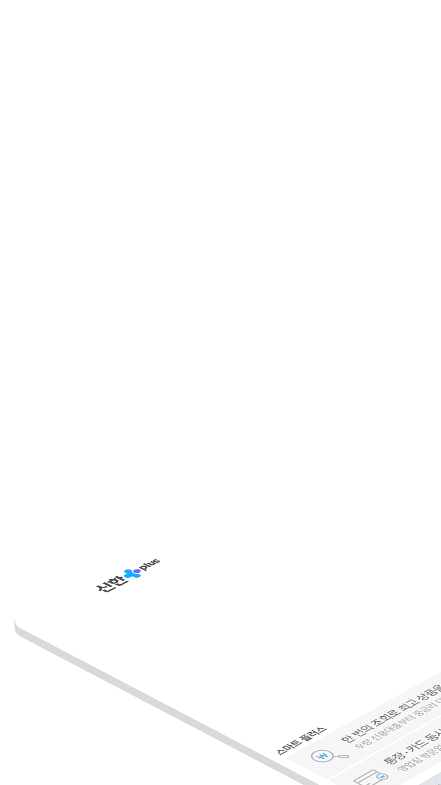
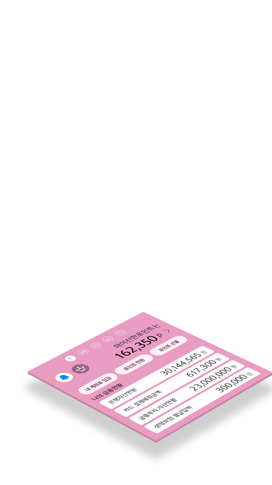
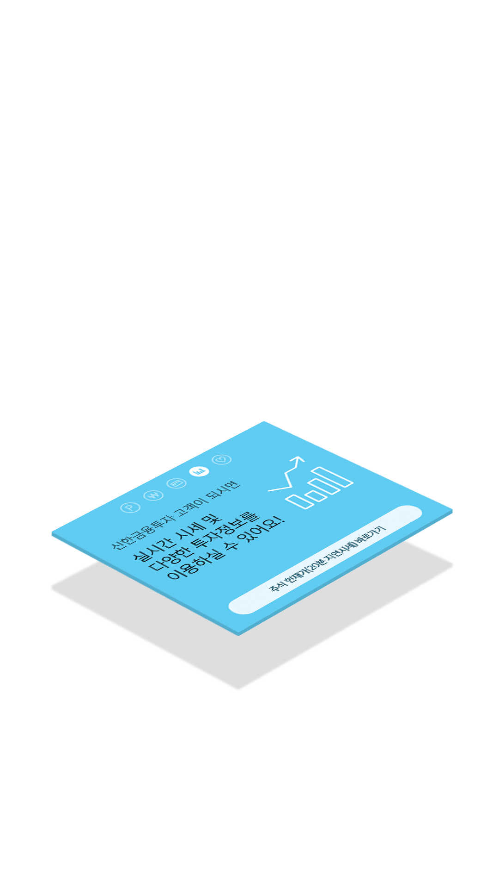
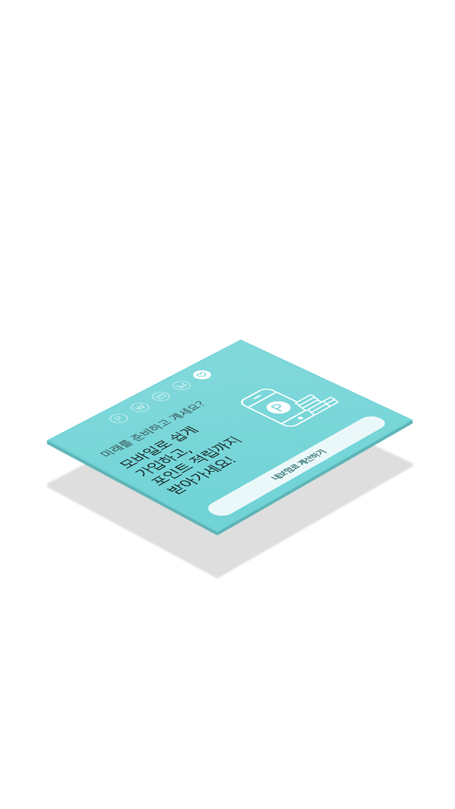
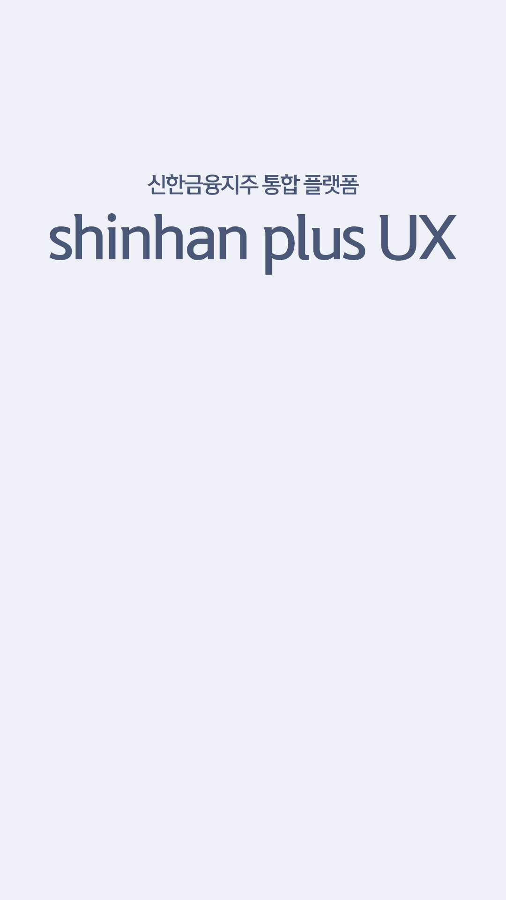

99%
대다수 사용자들의 금융자산은
부동산, 은행예금, 펀드, 연금, 보험 등에
분산되어 있습니다
65%
사용자 중 65% 이상이
더 나은 통합 자산 관리 서비스에 대한
필요성을 이야기 합니다
17%
현재 자신이 보유중인총 자산과
월 지출 금액을 정확히 알고 있는 사용자는
17% 미만 입니다
6%
투자 및 자산 관리 보고서를
이해할 수 있다고 대답한 사용자는
단지 6%에 불과합니다
Investment
Insurance
Bank
Credit card
우리는 사용자의 경험을 단순히 디자인적 차원에서
머무는 것이 아니라 금융 분야의 서비스 사이에서
어떻게 극대화 시킬지를 고민하였습니다.
이러한 금융 서비스 간의 사용자 경험을 위해
우리는 먼저 핵심 요소를 도출하였습니다
복잡한 금융 정보와 어려운 재무 용어, 프로세스를
명확한 단어와 필수 금융 정보 만을 제공하는
직관적인 인터페이스로 대체하였습니다.
개별적 서비스의 특수성은 고려하면서
하나의 아이덴티티로 서비스를 제공합니다
신한 PLUS를 통해 신한금융지주의 다양한
금융서비스를 막힘없이 한번에 이용하는
경험을 제공합니다.
독립된 오픈API로서 기능하며, 사용자에게 다른
어플리케이션의 추가 설치를 요구하지도 않습니다.